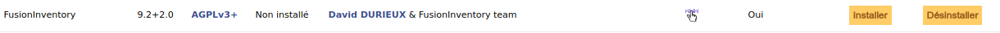
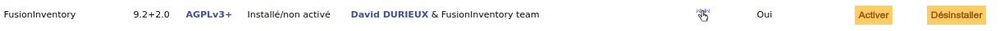

Installation de FusionInventory
FusionInventory est un plugin de GLPI permettant l'inventaire du matériel, la découverte réseau et le déploiement d'applications. Les plugins peuvent être consultables sous l'onglet Configuration > Plugins ou directement sur le site.
Récupération de l'archive
La dernière version de FusionInventory doit être téléchargée. Le dossier glpi-{version}.tar.bz2 est conseillé.
L'archive est à déplacer dans le dossier /var/www/glpi/plugins et à extraire.
sudo tar xfvj fusioninventory-for-glpi-glpi9.2-2.0.tar.bz2
Le dossier compressé peut être supprimé.
sudo rm fusioninventory-for-glpi-glpi9.2-2.0.tar.bz2
Activation de FusionInventory
Le plugin apparaît maintenant sous l'onglet Configuration > Plugins. Il faut désormais l'installer et l'activer.


Paramétrage de FusionInventory
GLPI affiche un message indiquant de configurer la crontab afin que les actions automatiques, telles que le nettoyage des fichiers temporaires ou l'optimisation de la base de données, s'effectuent à intervalle régulier. Pour ce faire, se rendre dans un terminal et ouvrir la crontab :
sudo crontab -u www-data -e.
Puis ajouter la ligne suivante en fin de fichier :
* * * * * /usr/bin/php7.0 /var/www/glpi/front/cron.php &>/dev/null
Dans le cas où le terminal renvoie une réponse concernant une erreur de timezone, ouvrir le fichier php.ini, situé sous /etc/php/apache2, et modifier la valeur de la timezone :
date.timezone=Europe/Paris
A présent, FusionInventory est disponible sous l'onglet Administration > FusionInventory.